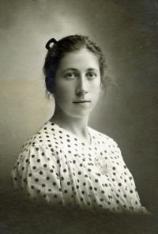

Arnfinn Johan Bragstad
M, #21802, f. 1 oktober 1924, d. 23 november 1993
Foreldre
Familie: Inger Johanne Bruun
| Datter | Ellen Johanne Bragstad |
Biografi
Arnfinn Johan Bragstad ble født den 1 oktober 1924 på/i Åsen, Levanger, Nord-Trøndelag. Han giftet seg med Inger Johanne Bruun. Han døde den 23 november 1993 på/i Levanger, Nord-Trøndelag. Han ble gravlagt den 1 desember 1993 på/i Åsen kirkegård, Levanger, Nord-Trøndelag.
Arnfinn Johan Bragstad had reference number 4677.
| Sist redigert |
21 oktober 2013 00:00:00 |
Gudrun Rebekka Bruun
K, #21805, f. 5 mars 1898, d. 22 mars 1966
Foreldre
Biografi
Gudrun Rebekka Bruun ble født den 5 mars 1898 på/i Foss, Vemundvik, Namsos, Nord-Trøndelag. Hun giftet seg med
Ivar Renbjør i 1931. Hun døde den 22 mars 1966 på/i Overhalla, Nord-Trøndelag.
Gudrun Rebekka Bruun was also known as Gudrun Rebekka Renbjør. Hun had reference number 4684.
| Sist redigert |
21 oktober 2013 00:00:00 |
Ingrid Oline Marie Olsen Elvemo
K, #21806, f. 12 oktober 1904, d. 2 mai 1996
Foreldre
Biografi
Ingrid Oline Marie Olsen Elvemo ble født den 12 oktober 1904 på/i Lenvik, Troms. Hun giftet seg med
Per Øien Renbjør den 31 desember 1936. Hun døde den 2 mai 1996 på/i Namsos, Nord-Trøndelag. Hun ble gravlagt den 8 mai 1996 på/i Vemundvik kirkegård, Namsos, Nord-Trøndelag.
Ingrid Oline Marie Olsen Elvemo was also known as Ingrid Oline Marie Renbjør. Hun had reference number 4688.
| Sist redigert |
17 desember 2010 00:00:00 |
Torbjørg Renbjør
K, #21807, f. 3 januar 1925, d. 21 august 2008
Foreldre
Familie: Ivar Svarliaunet (f. 17 mars 1923, d. 23 juni 1986)
| Sønn | Andreas Svarliaunet |
| Datter | Kjersti Svarliaunet |
Biografi
Torbjørg Renbjør ble født den 3 januar 1925 på/i Vemundvik, Namsos, Nord-Trøndelag. Hun giftet seg med
Ivar Svarliaunet den 5 februar 1955. Hun døde den 21 august 2008 på/i Overhalla, Nord-Trøndelag. Hun ble gravlagt den 27 august 2008 på/i Ranem kirke, Overhalla, Nord-Trøndelag.
Torbjørg Renbjør was also known as Torbjørg Svarliaunet. Hun had reference number 4689.
| Sist redigert |
21 oktober 2013 00:00:00 |
| Slektskap | 6-menning 2 ganger forskjøvet til Håkon Wahl |
Petter Renbjør
M, #21808, f. 8 april 1938, d. 30 juli 2020
Foreldre
Familie: Anne Grethe Olufsen
| Datter | Lise Marit Renbjør |
| Sønn | Petter Renbjør+ |
Biografi
Petter Renbjør ble født den 8 april 1938 på/i Vemundvik, Namsos, Nord-Trøndelag. Han giftet seg med Anne Grethe Olufsen den 26 juni 1965. Han døde den 30 juli 2020 på/i Sykehuset Namsos, Namsos, Trøndelag.
Petter Renbjør had reference number 4690. Han bodde i 1965 på/i Vetterhus, Vemundvik, Namsos, Nord-Trøndelag. Han kjøpte i 1965 Vetterhus 5/4, Vetterhus; Vemundvik, Namsos, Nord-Trøndelag. Han bodde i 1974 på/i Vetterhus, Vemundvik, Namsos, Nord-Trøndelag.
| Sist redigert |
3 august 2020 00:00:00 |
| Slektskap | 6-menning 2 ganger forskjøvet til Håkon Wahl |
Elsa Marie Renbjør
K, #21809, f. 13 februar 1942, d. 22 april 2022
Foreldre
Biografi
Elsa Marie Renbjør ble født den 13 februar 1942 på/i Vemundvik, Namsos, Nord-Trøndelag. Hun giftet seg med Bjarne Mæhlum. Hun døde den 22 april 2022 på/i Namsos, Trøndelag.
Elsa Marie Renbjør was also known as Elsa Marie Mæhlum. Hun had reference number 4691. Hun ble konfirmert i 1957 på/i Vemundvik kirke, Namsos, Nord-Trøndelag. Hun ble bisatt den 3 mai 2022 Sykehuskapellet, Namsos, Trøndelag.
| Sist redigert |
2 mai 2022 00:00:00 |
| Slektskap | 6-menning 2 ganger forskjøvet til Håkon Wahl |
Sara Olava Foss
K, #21812, f. 19 februar 1899, d. juli 1932
Foreldre

Sara Olava Foss
Biografi
Sara Olava Foss ble født den 19 februar 1899 på/i Foss, Vemundvik, Namsos, Nord-Trøndelag. Hun giftet seg med
Per Øien Renbjør i 1923. Hun døde i juli 1932 på/i Vetterhus, Vemundvik, Namsos, Nord-Trøndelag. Hun ble gravlagt på/i Vemundvik kirkegård, Namsos, Nord-Trøndelag.
Sara Olava Foss was also known as Sara Olava Renbjør. Hun had reference number 4694.
| Sist redigert |
1 oktober 2021 00:00:00 |
Ivar Svarliaunet
M, #21813, f. 17 mars 1923, d. 23 juni 1986
Foreldre
Familie: Torbjørg Renbjør (f. 3 januar 1925, d. 21 august 2008)
| Sønn | Andreas Svarliaunet |
| Datter | Kjersti Svarliaunet |
Biografi
Ivar Svarliaunet ble født den 17 mars 1923 på/i Overhalla, Nord-Trøndelag. Han giftet seg med
Torbjørg Renbjør den 5 februar 1955. Han døde den 23 juni 1986 på/i Overhalla, Nord-Trøndelag. Han ble gravlagt den 1 juli 1986 på/i Ranem kirkegård, Overhalla, Nord-Trøndelag.
Ivar Svarliaunet had reference number 4695. Han bodde i 1956 på/i Svarlien 47/2, Svarlien, Overhalla, Nord-Trøndelag.
| Sist redigert |
25 februar 2021 00:00:00 |
Sigrun Ingeborg Myrvold
K, #21819, f. 25 mai 1942, d. 27 juni 2021
Foreldre
Familie: Ørjan Renbjør
| Datter | Tove Irene Renbjør+ |
| Datter | Bente Renbjør+ |
Biografi
Sigrun Ingeborg Myrvold ble født den 25 mai 1942 på/i Vemundvik, Namsos, Nord-Trøndelag. Hun giftet seg med Ørjan Renbjør den 23 april 1966. Hun døde den 27 juni 2021 på/i Namsos, Trøndelag.
Sigrun Ingeborg Myrvold was also known as Sigrun Ingeborg Renbjør. Hun had reference number 4705. Hun ble konfirmert i 1956 på/i Vemundvik kirke, Namsos, Nord-Trøndelag. Hun ble bisatt den 6 juli 2021 Sykehuskapellet, Namsos, Nord-Trøndelag.
| Sist redigert |
5 juli 2021 00:00:00 |
Kaja Elisabeth Lervik
K, #21825, f. 29 mai 1898, d. 20 september 1940
Foreldre
Biografi
Kaja Elisabeth Lervik ble født den 29 mai 1898 på/i Vemundvik, Namsos, Nord-Trøndelag. Hun giftet seg med
Gunnar Renbjør. Hun døde den 20 september 1940 på/i Namsos, Nord-Trøndelag. Hun ble gravlagt den 27 september 1940 på/i Vemundvik kirkegård, Namsos, Nord-Trøndelag.
Kaja Elisabeth Lervik was also known as Kaja Elisabeth Renbjør. Hun had reference number 4715.
| Sist redigert |
27 oktober 2017 00:00:00 |
{kind=link}